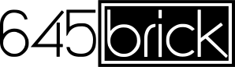

The Control
High speed movement control
Motion optimized real time os
High resolution servo control
The Stability
4 axis gimbal
Rigid carbon and aluminum honeycomb construction
Movement optimized design
Light weight and compact
The Vision
Large format focal reducer
Autofocus and wireless follow focus control
Optical aberration reduction
Camera firmware optimization
645 the dream
Currently in planning and devlopment stages
to prepare a proof of concept